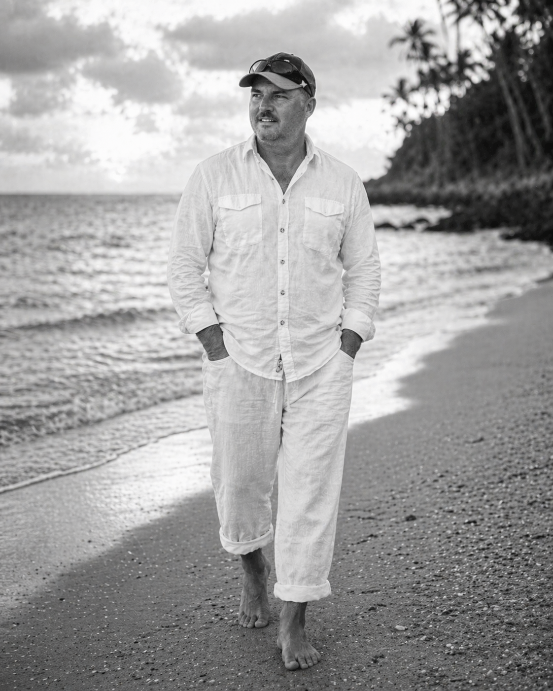
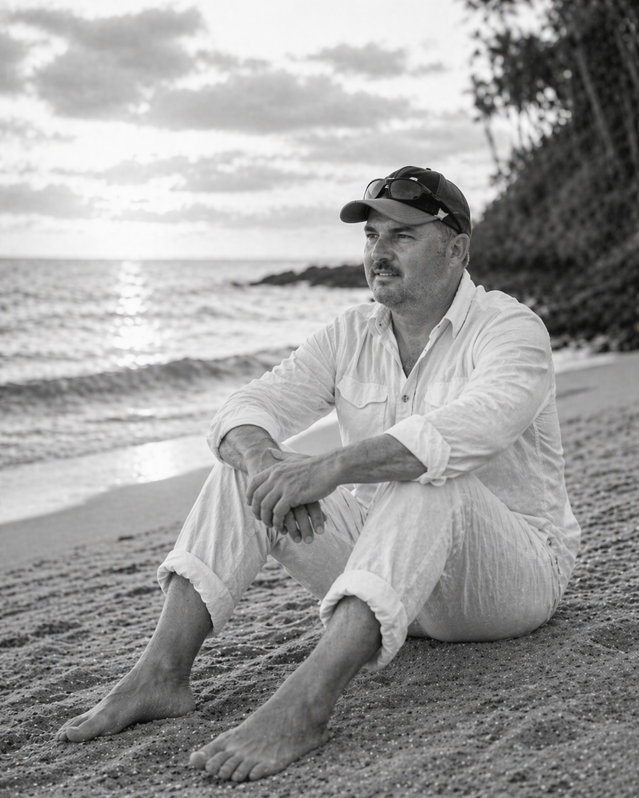
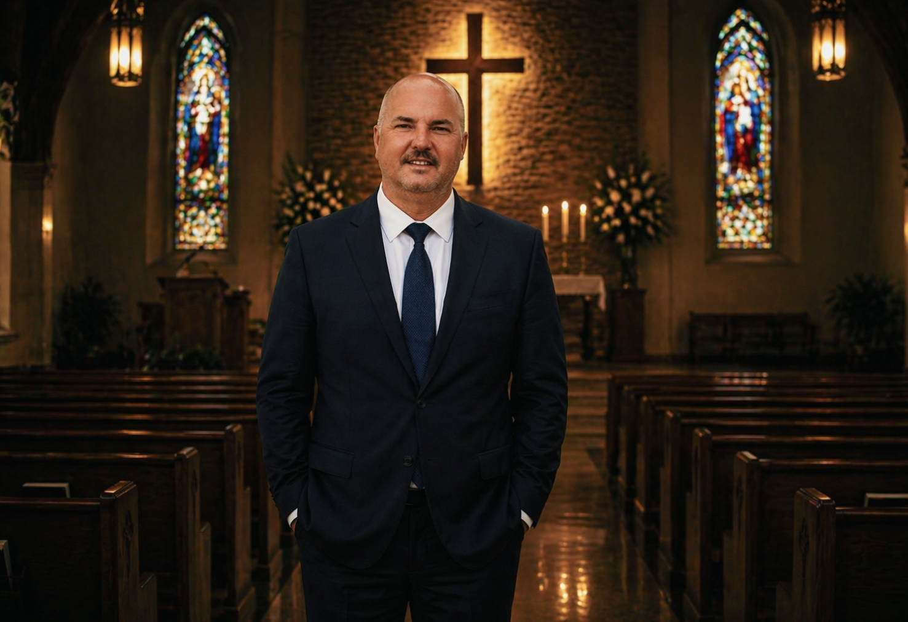
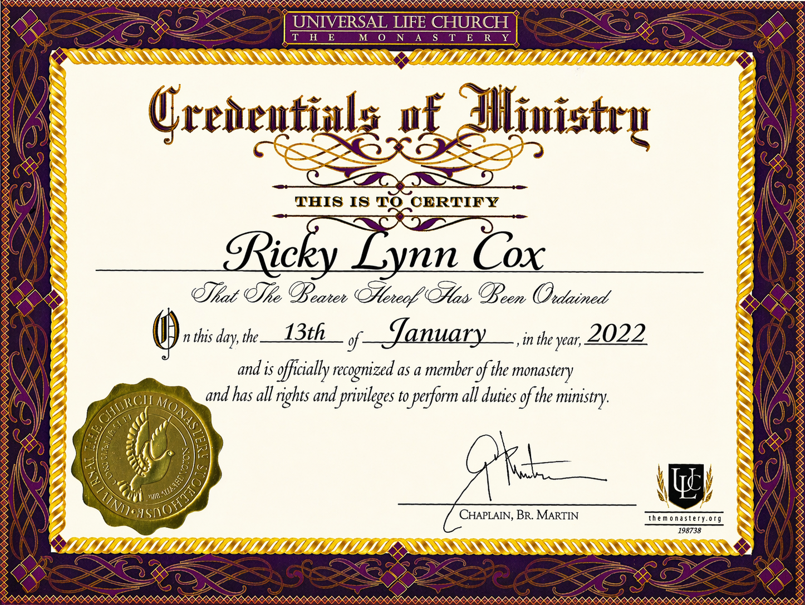
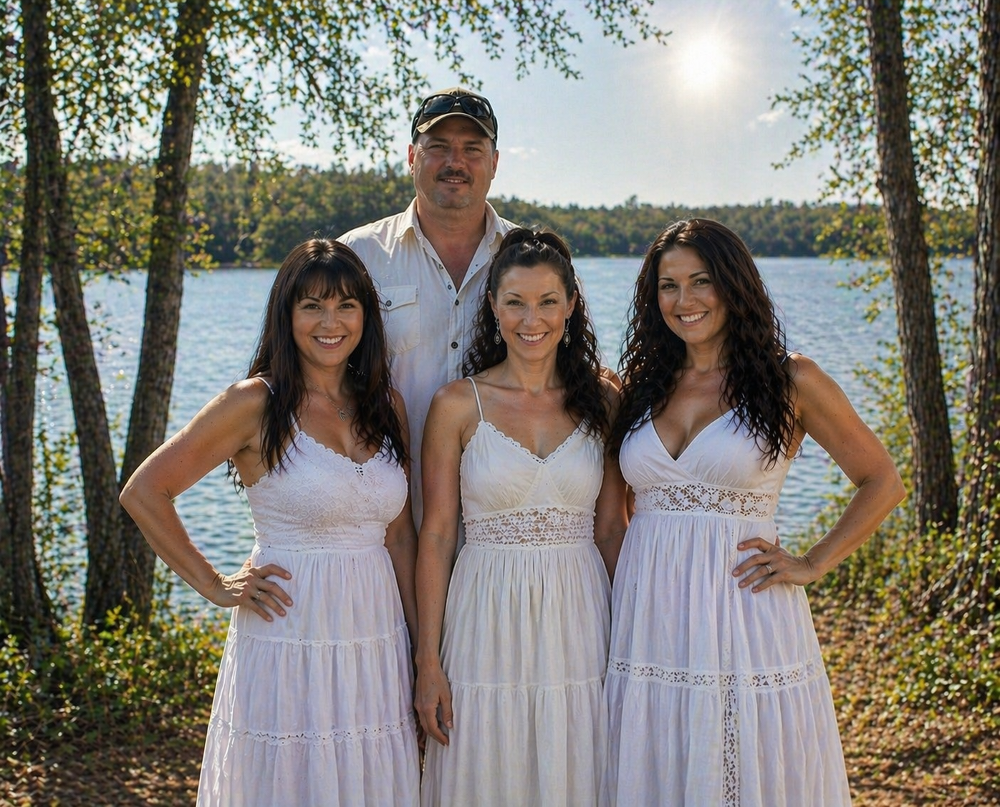
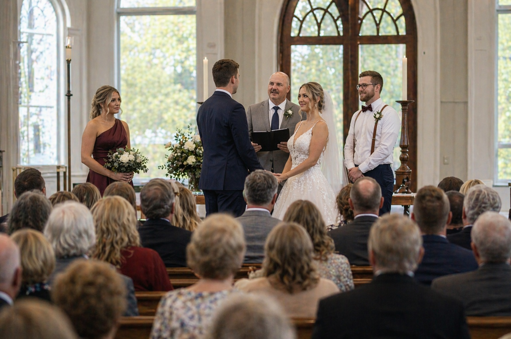
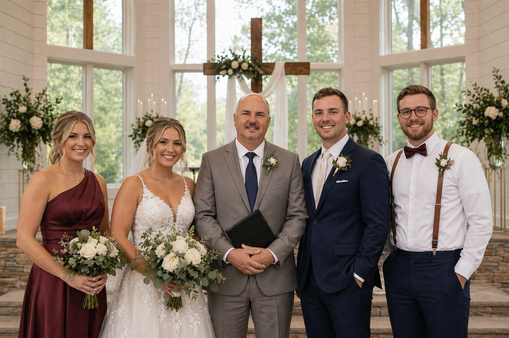
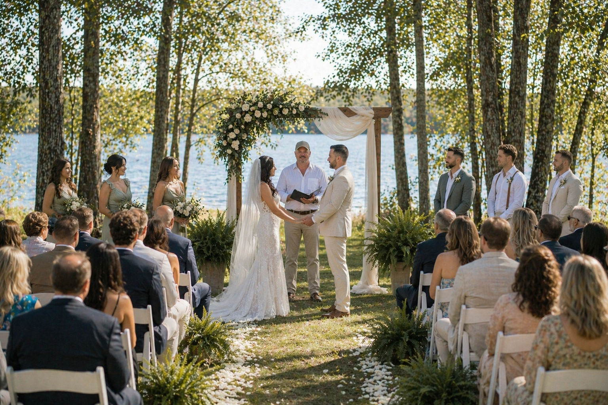
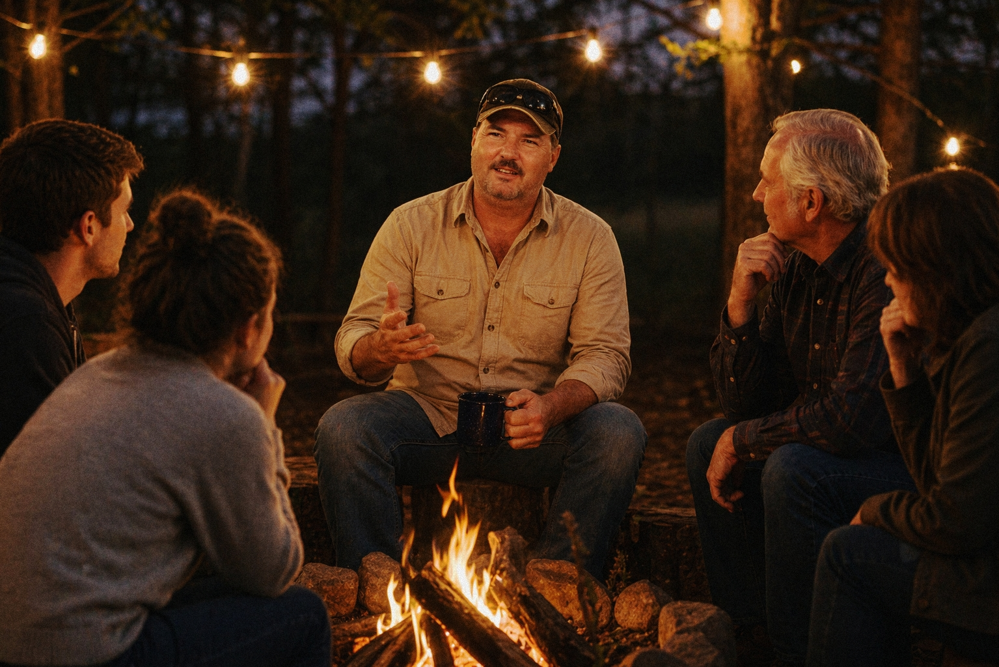
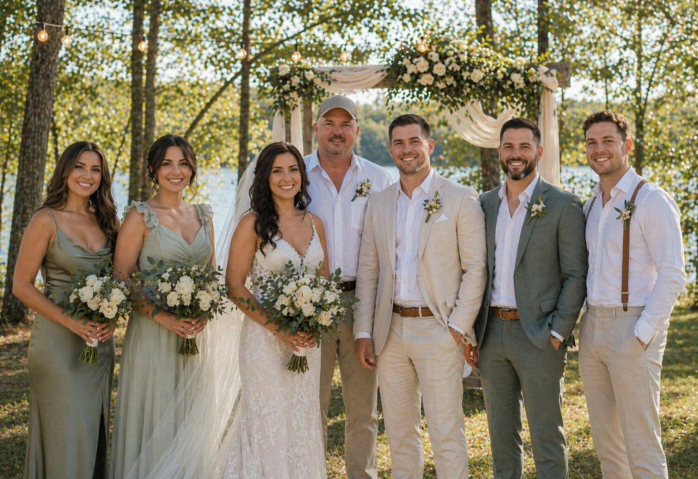

Christian ceremonies, compassionate guidance, recovery support, and prayer-centered ministry rooted in faith, grace, and real-life experience.
Confidential • Judgment-Free • Faith-Centered Support

Sometimes the first step is simply reaching out.
Recovery and support should feel safe, personal, and real. Pastor Rick offers steady encouragement, prayer, accountability, and conversations that meet people where they are.
You don’t have to go through this alone.
If you’re in a hard place right now—struggling, overwhelmed, or just trying to hold it together—this is a safe place to reach out.
There’s no pressure, no judgment, and no expectations. Just real conversation, real faith, and someone willing to walk with you.
Private, faith-centered conversations for addiction, grief, loss, or life challenges. You can talk freely.
Guidance for those in recovery and those stepping into helping others. Learn how to grow and give back.
Ongoing support, check-ins, and prayer to help you stay grounded and moving forward.
Park, outdoors, phone, or simple conversation—whatever helps you feel safe enough to open up.
You’re not here by accident. If you’re reading this, it may be time to reach out.
Available now. You can text anytime.
Text Ricky for SupportIf you’re in immediate danger or need emergency help, please contact local emergency services. Otherwise, know that support is here—and you are not alone.
Private • Respectful • Faith-Centered Conversations
You don’t have to have it all figured out before you reach out.
Whether you’re carrying grief, conflict, addiction, or uncertainty, this is a place to start with honesty and without judgment.
You don’t have to carry this alone.
If something in your life feels heavy right now—your marriage, your family, your past, or your thoughts—you don’t have to figure it out by yourself.
This is a safe place to talk. No pressure. No judgment. Just real support, grounded in faith and understanding.
Your first conversation is completely free.
Support through loss, heartbreak, and emotional pain.
Guidance to strengthen connection, communication, and trust.
Help navigating conflict, communication, and family challenges.
Support for substance use, habits, and life struggles.
Need to talk sooner? You can reach out directly.
Text anytime • Response usually within a few hours
Text Ricky Now✔ Private & Confidential
✔ No judgment, ever
✔ Faith-based, real-world guidance
Important: These services are faith-based guidance and support, not licensed clinical counseling. If you need medical, psychological, or emergency assistance, please contact a licensed professional or emergency services.
Faith-filled support for weddings, memorials, family blessings, and sacred life moments.
“Mr. Rick was my sponsor for years and still keeps in touch. He guided me through many stages of my journey and taught me how to become a sponsor myself. It’s incredibly redeeming to now be able to help others the way he helped me.”
Personalized wedding ceremonies, elopements, vow renewals, and covenant-focused services with prayer and scripture available.
Compassionate Christian services for funerals, graveside ceremonies, celebrations of life, and family prayers.
One-on-one prayer, scripture-based encouragement, and gentle faith-centered support during difficult or meaningful seasons.
Christ-centered conversations for couples preparing for marriage, focused on values, communication, prayer, and commitment.
Support for local outreach, women’s gatherings, family programs, prayer groups, nonprofit events, and ministry-centered service.
House blessings, baby dedications, family unity ceremonies, prayers over new beginnings, and custom faith-filled moments.


Officially Ordained Minister
Ordained Minister – January 13, 2022
Recognized and authorized to perform weddings, ceremonies, and ministry services.
Serving with integrity, compassion, and faith since 2022.
Pastor Ricky Cox – Founder of Cox Ministries
Pastor Ricky Cox is a man of deep faith, life experience, and genuine compassion. He has walked many roles in life—as a son, husband, father, and grandfather—and brings that lived understanding into every person he serves.
Originally from Texas, Ricky spent years traveling across the United States before settling in Missoula, Montana, where he now serves his community through Cox Ministries. Since becoming an ordained minister in 2022, he has dedicated his life to helping others through some of their most meaningful and challenging moments.
Ricky has officiated weddings, guided couples in building strong, faith-centered marriages, and supported families through both joyful celebrations and seasons of loss. He has also worked with individuals facing difficult struggles, including substance abuse, offering steady encouragement, accountability, and a path forward rooted in faith.
More than 20 years ago, Ricky made a life-changing decision to fully give his life to God. That decision became the foundation of his calling. Since then, he has traveled and guest spoken in various places across the country, sharing messages of hope, restoration, and purpose.
Ricky’s journey has been marked by both calling and deep loss. He has endured the passing of the love of his life—the mother of his children—as well as the loss of his first-born son, Thomas. These experiences have shaped a quiet strength in him and a compassion that cannot be taught—only lived. Through it all, his faith has remained steady, becoming the anchor that now allows him to sit with others in their hardest moments with presence, patience, and genuine understanding. Ricky is the father of three beautiful daughters and a proud grandfather to four grandchildren. Though his family is in Texas, they remain closely connected, and family continues to be at the center of his heart and ministry.

Today, Ricky is also writing his first book—sharing his personal journey, including a powerful 40-day fast, and the lessons God has revealed along the way.
He meets people where they are, walks with them through life’s valleys and victories, and always points them back to God.
There was a moment in my life when everything changed—when I realized I couldn’t do it on my own anymore. In that moment, I fully surrendered my life to God. That decision didn’t just change my path—it gave me purpose.
Since then, my heart has been to walk alongside others in their most important moments—whether that’s standing with a couple on their wedding day, sitting with someone in a season of loss, or praying with someone who just needs strength to keep going.
I don’t believe in doing ministry from a distance. I believe in being present, being real, and meeting people exactly where they are—with no judgment, just faith, compassion, and truth.
If you’re looking for someone to walk with you through one of life’s most meaningful moments, I would be honored to serve you.
Serving: Missoula, Montana and surrounding areas. Available for couples, families, seniors, community groups, and anyone needing compassionate Christian spiritual support.
Meaningful, faith-centered ceremonies for elopements, weddings, vow renewals, and sacred moments in Missoula, Montana and surrounding areas.

Perfect for elopements, signing ceremonies, or couples who want something short, sweet, and meaningful.
A personalized Christian ceremony with prayer, scripture options, and a warm message centered around your love story.
For couples who want a deeper, more customized ceremony with extra care, planning, and spiritual meaning.
Available upon request: rehearsal attendance, travel outside the Missoula area, rush booking, vow help, keepsake ceremony script, or premarital faith guidance.


A glimpse into faith, family, weddings, recovery, and real moments of connection.


Every moment. Every story. His glory.
What people experience when working with Cox Ministries.
“Pastor Rick helped save my life during one of the darkest times I’ve ever faced.”
After losing the love of my life—my mother—I was completely broken. Pastor Rick met me with compassion, strength, and a sense of humor that made healing feel possible again.
He’s incredibly easy to talk to and never made me feel judged or uncomfortable. Instead of a formal setting, he would even meet me at the park—where I felt safe enough to truly open up. That personal care meant everything.
What makes him truly different is that his support doesn’t stop after a conversation. He still checks in, and that kind of genuine care is rare.
If you’re looking for someone who is real, understanding, and truly invested in your healing, I cannot recommend Pastor Rick enough.
“We found more than an officiant—we found a lifelong friend.”
Just 7 days before our wedding, our original officiant had an accident and we were left scrambling. When we reached out to Pastor Rick, he immediately stepped in with compassion and flexibility. He spoke with my fiancé and me the very same day and put us completely at ease.
What we experienced went far beyond a ceremony. Pastor Rick brought humor, sincerity, and a deep understanding of both the Word and people. Even though he had just met us, he delivered a ceremony so meaningful that it had both my husband and me in tears.
Since our wedding day, he hasn’t just disappeared—he continues to check in on us and even gifted us something special filled with scripture. That kind of care is rare.
I can officially say we gained more than just each other—we gained Pastor Rick too.
“During one of the hardest times in our family, Ricky showed up with compassion and calm. His words brought peace.”
“You can tell Ricky truly cares. He listens, he prays, and he doesn’t judge.”
More stories will be added as Cox Ministries continues to serve couples, families, and individuals throughout the community.
Serving Missoula, Montana and nearby communities. Choose your service, preferred date, and the best way to reach you.
For the fastest response, text 830-929-8912.
Submit your booking details, choose your payment type, and complete your deposit, balance, or donation securely through PayPal.
Use this for full wedding, memorial, outreach, or ministry service payments.
Support prayer, outreach, and faith-based ministry services in the community.
Booking Policy: A deposit helps reserve your requested date. Your date is confirmed once booking details and payment are received. Payments are processed securely through PayPal. Please include your name and service date in the PayPal note when possible.
Share what you need, your preferred date, and the best way to reach you. Texting is the fastest way to connect.
📞 Text for faster response: 830-929-8912
Serving Missoula, Montana & surrounding areas
Note: Prayer, ministry support, and faith-based guidance are not a substitute for licensed counseling, legal advice, medical care, or emergency services.